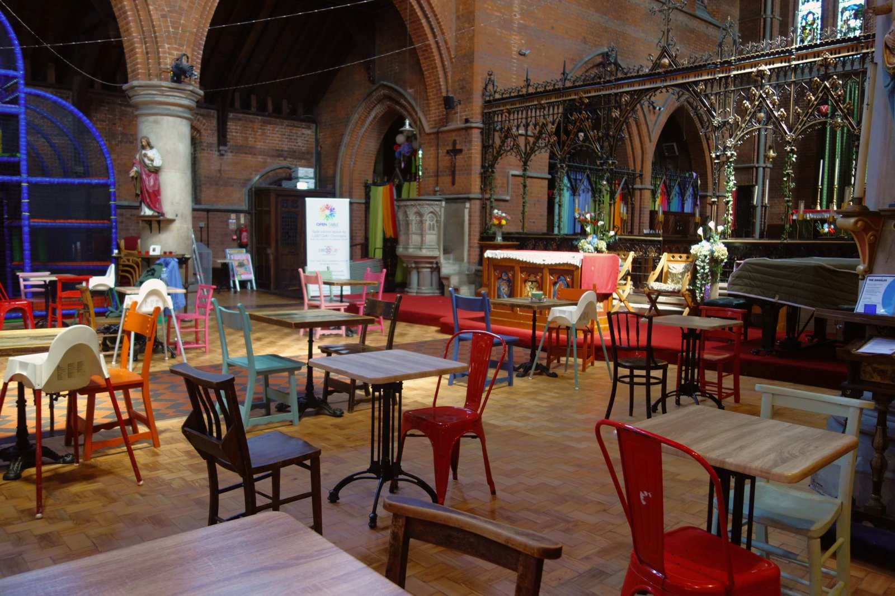
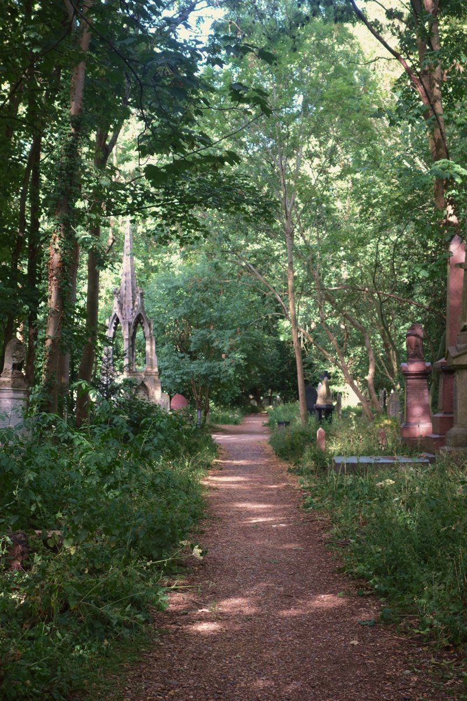

How it works
A database in two parts
Browse the interventions to see changes photographed where they already happen. Planners: see how sites are assessed. Faith and community groups: picture your own site in the site studio.
Case Studies
These are sites which have become shared spaces; their interventions are analysed through uses, publicness, interaction, and sacredness. Case studies can also have further opportunities.
Browse now
Opportunities
These are sites where underuse has been recognised and have potential based on their scale and four dimensions: use, publicness, interaction, and temporality.
Browse now
Tags
Every entry is tagged the same way with simpler tags and more complicated tags. They follow a system analysing where the site is, who runs it, how open is it, and how it happened or could happen.
Status
All entries will carry a status if they are established interventions, emerging transitions, or fully opportunity sites. Every entry also shows when it was last checked against a live source, with links to sources at the end.
Filters
Use the filters on either page to browse by any combination of these. If you are unsure about a tag, the full glossary lives on the Toolkit page.
Documented, assessed, tagged, shared
Every entry follows the same path, so that two sites in different boroughs, run by different people, can honestly be compared.
Documented
Visited and recorded: photographs, uses observed, and the story of how the place came to be what it is — checked against live sources.
Assessed
Rated on the publicness ladder (L1–L5) and for interaction, with written notes explaining each judgement — not just a score.
Tagged
Filed under one shared taxonomy: where it is, who runs it, how open it is, how it happened, and what happens there.
Shared & grown
Published with sources and last-checked dates, and open to new submissions — more sites, more boroughs, more traditions.
Because the evidence is scattered
A creative database of case studies was called for at the inter-faith planning policy forum: planners and faith groups keep solving the same problems separately. This collection is specific — starting with churches, churchyards and cemeteries — but expandable to the many other ways religion adapts in the city.
The focus is design and planning: the spatial moves, governance models and funding routes that turn underuse into interaction. Toolkits for project planning exist elsewhere; what has been missing is comparable, honest, filterable examples.
Contributions to practice
- More sites and more people involved — including active, thriving sites, not only troubled ones.
- A resource for charities, faith organisations and funders scanning for projects in opportunity areas.
- Design knowledge for increasing interaction — connection — in shared space.
- A fairer, more shared conversation about religion in public space: religion is not disappearing, it is adapting, fluctuating, changing.
The publicness ladder, briefly
Five levels, measured by what a stranger can actually do on an ordinary Tuesday — not by what a policy says. The full checklist lives in the toolkit.